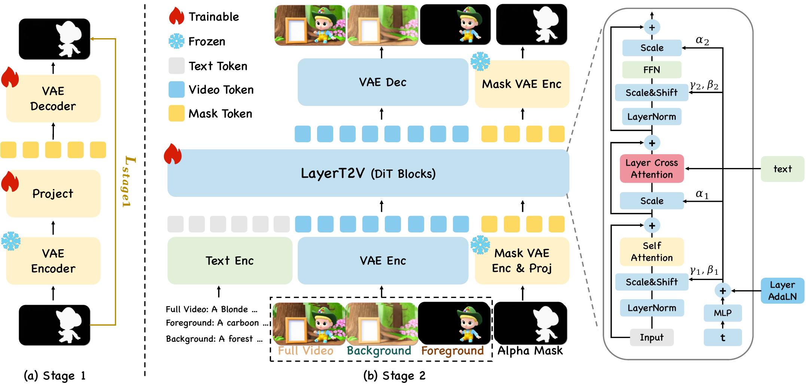
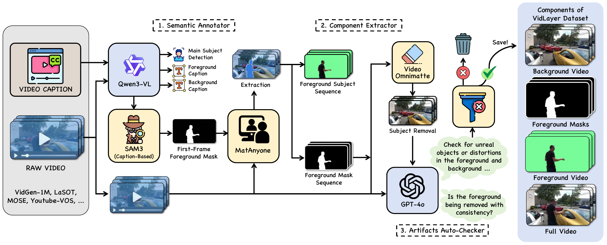
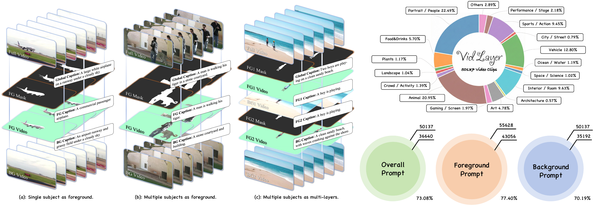
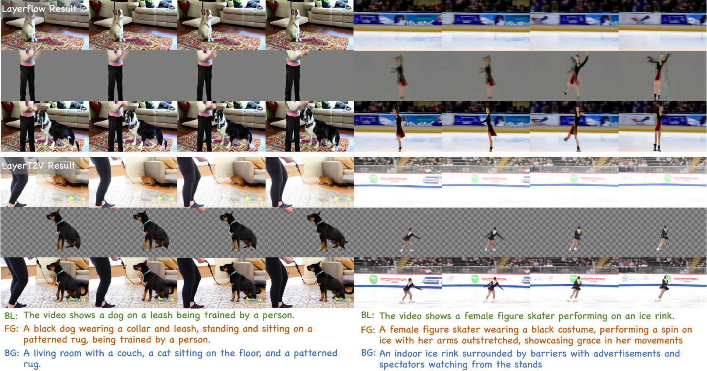
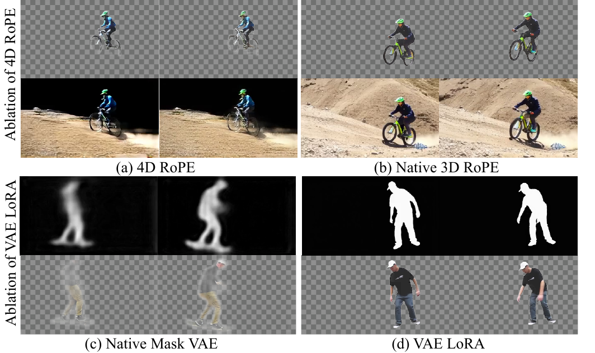
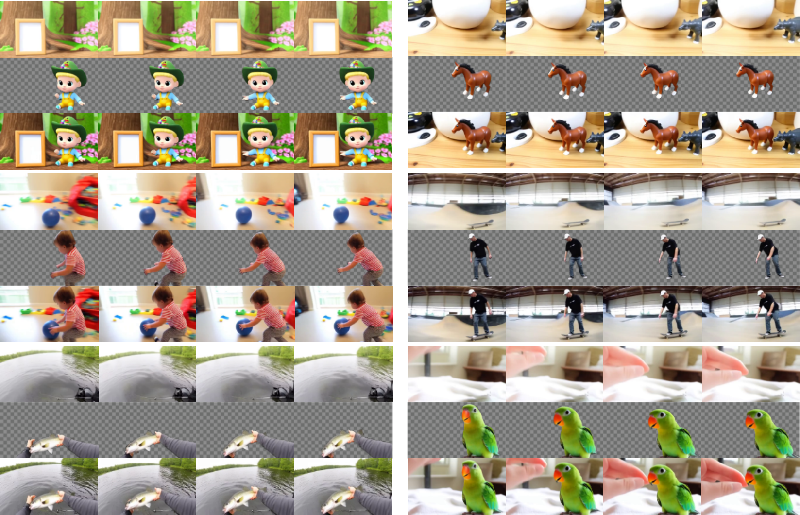

International Conference on Machine Learning (ICML), 2026
*Equal contribution. †Corresponding author.
Text-to-video generation has advanced rapidly, but existing methods typically output only the final composited video and lack editable layered representations, limiting their use in professional workflows. We propose LayerT2V, a unified multi-layer video generation framework that produces multiple semantically consistent outputs in a single inference pass: the full video, an independent background layer, and multiple foreground RGB layers with corresponding alpha mattes. Our key insight is that recent video generation backbones use high compression in both time and space, enabling us to serialize multiple layer representations along the temporal dimension and jointly model them on a shared generation trajectory. This turns cross-layer consistency into an intrinsic objective, improving semantic alignment and temporal coherence. To mitigate layer ambiguity and conditional leakage, we augment a shared DiT backbone with LayerAdaLN and layer-aware cross-attention modulation. LayerT2V is trained in three stages: alpha mask VAE adaptation, joint multi-layer learning, and multi-foreground extension. We also introduce VidLayer, the first large-scale dataset for multi-layer video generation. Extensive experiments demonstrate that LayerT2V substantially outperforms prior methods in visual fidelity, temporal consistency, and cross-layer coherence.
LayerT2V leverages the high temporal-spatial compression of modern video backbones to serialize multiple layer streams along a shared trajectory, augmented with LayerAdaLN and layer-aware cross-attention for layer identity and prompt routing.

The first large-scale layer-aligned video corpus. An automated pipeline turns 200K raw caption-video pairs into 50K structured samples — each with the full video, foreground, background, alpha matte, and layer-level captions.


Each slide shows one scene with all four outputs produced in a single inference pass — composited full video, background layer, foreground RGB, and the alpha matte. Use the arrows or pagination dots to browse.
Against LayerFlow on held-out VidLayer prompts, LayerT2V produces sharper foregrounds, cleaner backgrounds, and tighter cross-layer alignment.

LayerT2V wins on every dimension of foreground / background / blended outputs.
Preference rates — higher is better. LayerT2V is preferred by a 4–6× margin.
LayerAdaLN and layered cross-attention are both essential. 4D RoPE fails to disentangle layer identity from temporal dynamics; the native Mask VAE produces blurry mattes — VAE LoRA fixes both.

Three generation modes — single foreground with single subject, single foreground with multiple subjects, and multi-foreground with independent layers.

@misc{li2026layert2vunifiedmultilayervideo,
title = {LayerT2V: A Unified Multi-Layer Video Generation Framework},
author = {Guangzhao Li and Kangrui Cen and Baixuan Zhao and Yi Xin and
Siqi Luo and Guangtao Zhai and Lei Zhang and Xiaohong Liu},
year = {2026},
eprint = {2508.04228},
archivePrefix = {arXiv},
primaryClass = {cs.CV},
url = {https://arxiv.org/abs/2508.04228}
}